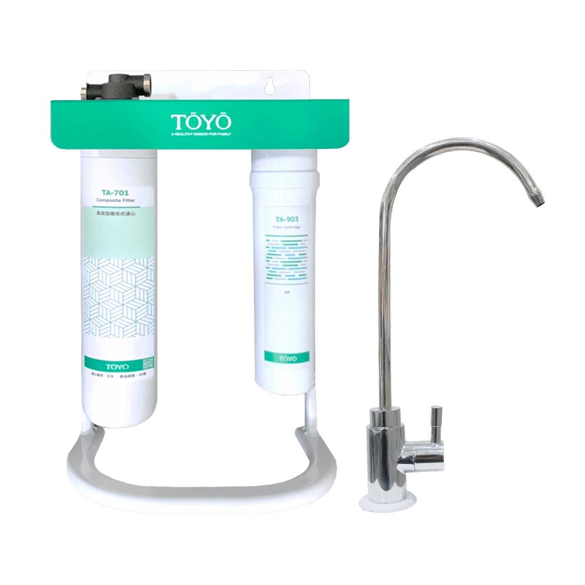
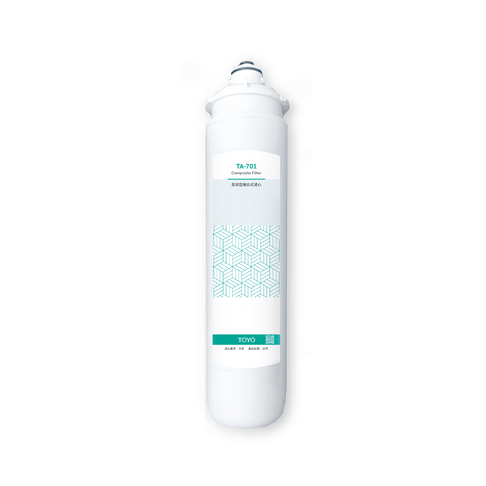

複合式生飲淨水器
TA-701B
TA-701B
商品描述
生飲淨水即開即飲，搭配複合式生飲濾心，長效更安心。
通過台灣SGS國家生飲認證。
濾材符合美國NSF42標準、美國FDA檢測項目、日本食品分析中心JFRL認證。
【濾料日本原裝 三大核心技術】
- 日本GE-Techno陶瓷濾料
- 日本GE-Techno銀離子活性碳纖維
- 日本エルベス不織布
可以除菌抑菌、濾除三氯甲烷、揮發性有機物、有害化學物質、水中重金屬鉛、銅、汞、石綿、農藥、泥沙雜質、塑膠微粒等，過濾孔徑為1Microns。
【注意事項】
1.適用一般自來水(請勿使用山泉水、地下水)
2.水壓不足的場合建議另加購加壓馬達
3.管路如需水電施工，費用另計
【保養及維護】
請務必依照濾心使用壽命時間，定期更換，確保您的飲用水品質。若未使用且靜置多日，使用前請先排放水3-5分鐘，有任何問題可詢問客服中心 0800-090-881。
商品內容
複合式生飲淨水器 TA-701B :
TA-701 複合式生飲濾心 X 1
TA-903 PP棉濾心 X 1
標準配件:
無鉛鵝頸淨水龍頭 X 1
2道式濾心立架 X 1
商品規格
| 濾材 | GE-Techno碳纖維、日本銀離子、1μ(微米)陶瓷纖維、高密度日本食品級不織布 |
| 過濾效能 | 可去除餘氯、抑制細菌、除異味、三氯甲烷、揮發性有機物、有害化學物質、管路重金屬鉛、銅、汞、石綿、農藥殘留等。 |
| 過濾能力 | 約12個月(使用時間未達12個月，約20000L（餘氯<2ppm時）) ※依照各地水質、使用方式，壽命也會改變 |
| 尺寸 | 約28(寬) 38(高) 10(深) cm |
| 重量 | 約3kg |
| 使用水溫 | 4~40℃以下 |
| 適用水壓 | 14-42psi( 1-3 kg/cm²) |
| 濾料產地 | 日本原裝進口 |
| 保存期限 | 未開封5年 |
週邊配件

TA-701

TA-903PP棉濾心